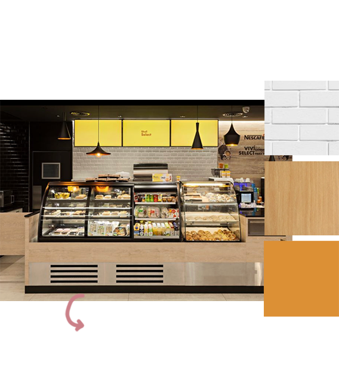
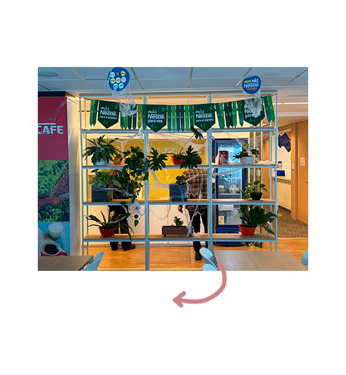
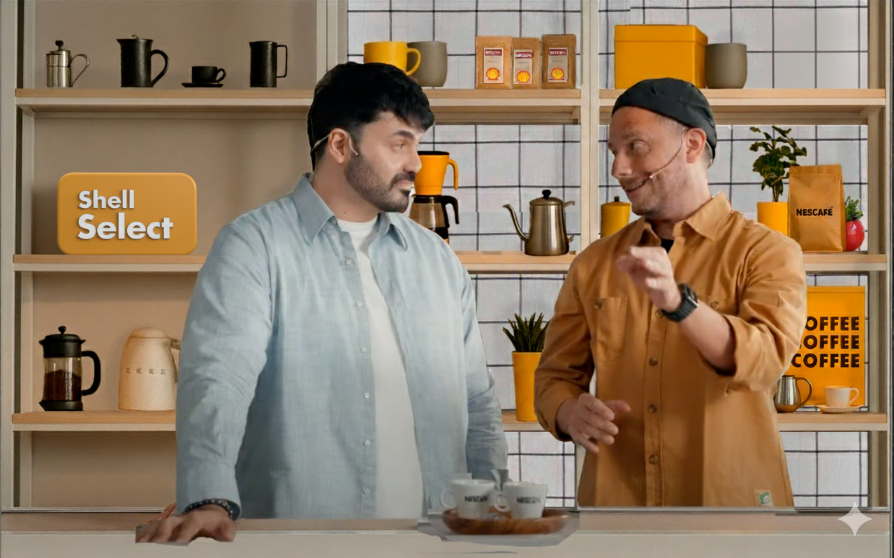

objetivo
A través del diseño escenográfico para la Copa Batista, buscamos recrear dentro de las oficinas de Nestlé la atmósfera reconocible de una Shell Select, combinando elementos icónicos del universo del café con una cuidada integración de los colores y códigos visuales de la marca. El objetivo fue construir un entorno que no solo contextualice la competencia, sino que refuerce el branding de manera orgánica, evocando una experiencia familiar y sensorial que conecte con el ritual del café.

SHELL SELECT
Traducción de materiales de la tienda real a un lenguaje de set, manteniendo la familiaridad de marca pero con limpieza de estudio.

Oficinas
Reciclaje de estructuras: Intervención de un espacio de oficina para crear una atmósfera de barra profesional, optimizando recursos a través del diseño de paneles y la curaduría de materiales.
boceto set 1
